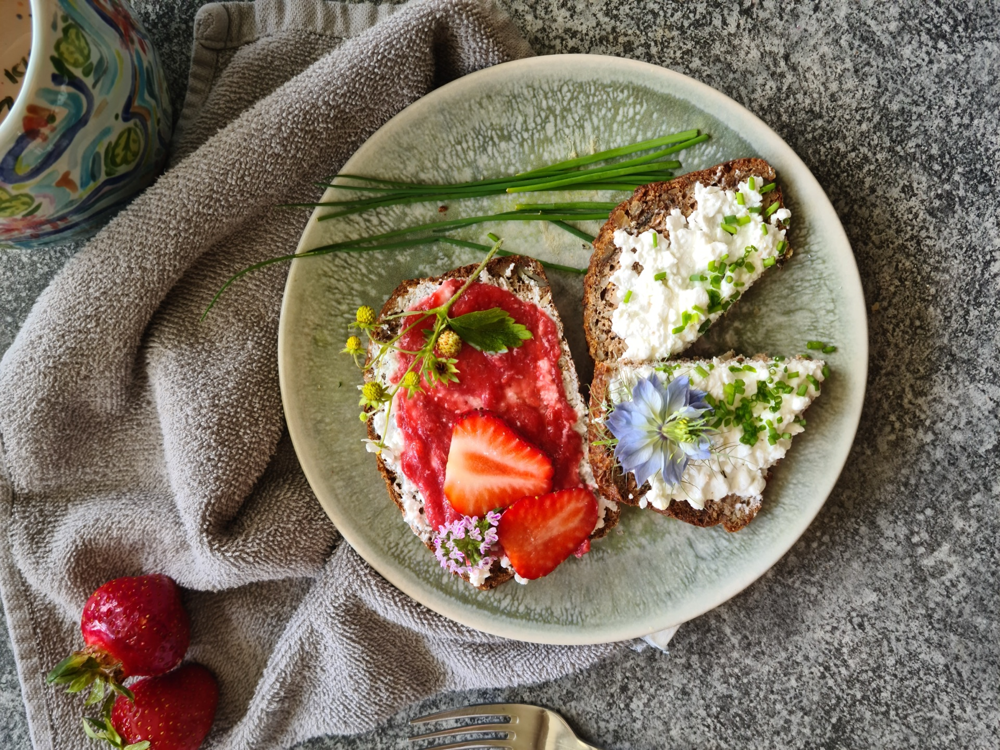

Mit Kürbiskernen und Magerquark — oder die Backmischung von HistaFOOD.
Zum Rezept →
Aus Haferflocken, Chia- und Leinsamen. Optional mit Zucchini.
Zum Rezept →
Ohne Hefe, aus Magerquark und Sprossenmehl. Schnell gemacht.
Zum Rezept →
Aus Sprossenmehl und Magerquark. Optional mit Kürbiskernen bestreut.
Zum Rezept →
Ohne Hefe, aus Magerquark und Sprossenmehl.
Zum Rezept →